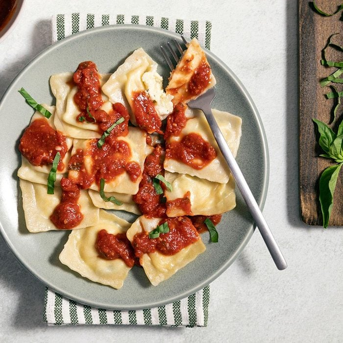

lets Start with our first Recipe ravioli
Ravioli!
Total Time: 2 hours Cook: 10 min.
Ravioli from scratch is a labor of love, but a delicious one. This guide will help you whip up pasta dough, sauce and a fantastic filling.
Ingredients
- 5 to 5-1/2 cups all-purpose flour
- 6 large eggs
- 1/2 cup water
- 1 tablespoon olive oil
Caesar Salad

Classic Caesar Salad with crisp homemade croutons and a light caesar dressing for when you want to impress your dinner guests. If you love caesar recipes as much as we do, check out our creamy caesar dressing and caesar pasta salad.
Ingredients
- 1 large or 2 small heads of romaine lettuce
- Parmesan cheese, shredded or shaved
- Crisp croutons homemade can be made several days ahead. The recipe below makes enough for 2 salads.
- Caesar salad dressing homemade is best and here is our favorite store-bought dressing in a pinch
Discover the only lasagna recipe you'll ever need!
Continue reading to learn how to make this meaty,
cheesy, crowd-pleasing Simply Lasagna Recipe tonight.
Total Time: 1 Hr(s) 20 Min(s)
Prep Time: 20 Min(s)
Servings: 12
- 1 lb. lean ground beef
- 1 egg, beaten
- 1 container (15 oz.) part-skim ricotta cheese
- 1/4 cup chopped fresh parsley
- 2-1/2 cups KRAFT Shredded Low-Moisture Part-Skim Mozzarella Cheese, divided
- 1/2 cup KRAFT Grated Parmesan Cheese, divided
- 24 oz tomato and basil pasta sauce
- 1 cup water
- 12 lasagna noodles, uncooked